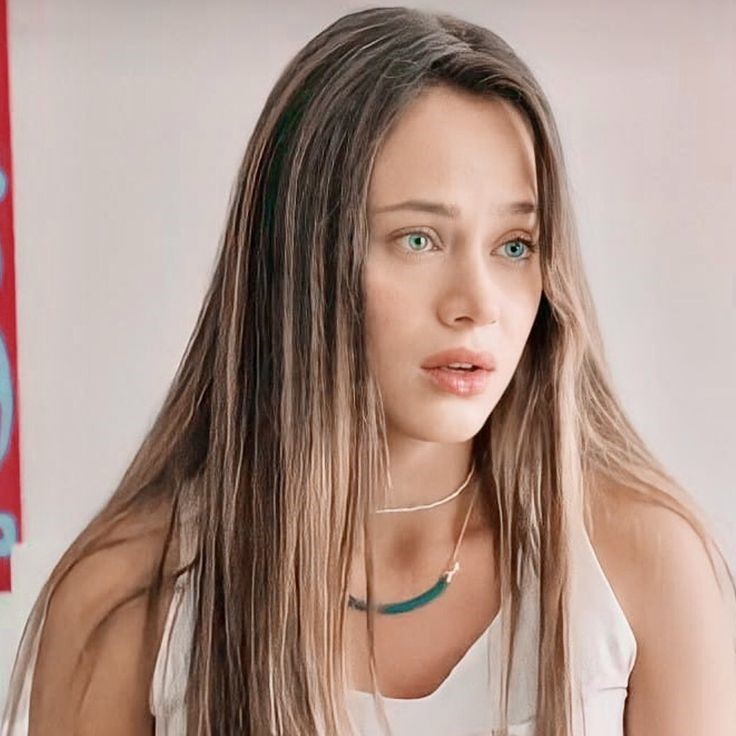
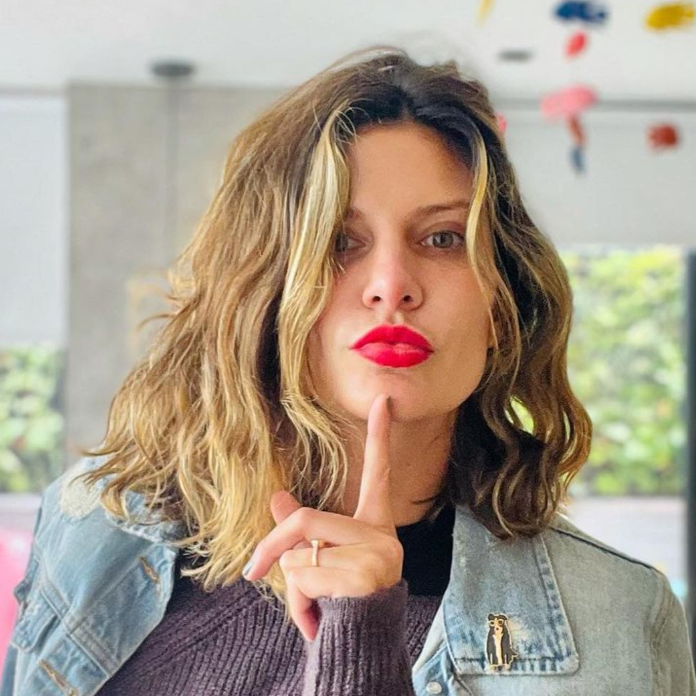

La Reina del Flow
Después de pasar diecisiete años en la cárcel injustamente, una compositora talentosa busca vengarse de los hombres que la hundieron y mataron a su familia.

Después de pasar diecisiete años en la cárcel injustamente, una compositora talentosa busca vengarse de los hombres que la hundieron y mataron a su familia.
Interpretado por Carolina Ramírez
Interpretado por Carlos Torres
Interpretado por Andrés Sandoval
Interpretado por Juan Manuel Retrepo
Interpretado por Marina Garzón
Interpretado por Adriana Arango
Interpretado por Mabel Moreno
Interpretado por Diana Wiswell
Interpretado por Lucho Velasco
| Temporada | Episodios | Estreno |
|---|---|---|
| 1 | 82 | 12 de Junio de 2018 |
| 2 | 89 | 26 de Abril de 2021 |